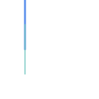
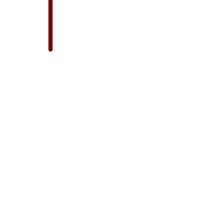

Name
ST_Difference — ジオメトリBとインタセクトしていないジオメトリAの一部を表現するジオメトリを計算します。
Synopsis
geometry ST_Difference(geometry geomA, geometry geomB, float8 gridSize = -1);
説明
ジオメトリBとインタセクトしていないジオメトリAの一部を表現するジオメトリを計算します。これはA - ST_Intersection(A,B)と同じです。Aが完全にBに包含されている場合には、適切なタイプの空のジオメトリが返されます。
![[Note]](images/note.png) | |
これは、重ね合わせ関数では唯一の入力順序を気にしなければならない関数です。ST_Difference(A, B)は常にAの一部を返します。 |
任意引数gridSizeが与えらえれた場合には、入力は与えられた大きさのグリッドにスナップされ、結果の￥頂点は同じグリッド上で計算されます (GEOS-3.9.0以上が必要)。
GEOSモジュールで実現しています。
Enhanced: 3.1.0 gridSizeパラメータを受け付けます - GEOS 3.9.0以上が必要です。
 This method implements the OGC Simple Features
Implementation Specification for SQL 1.1. s2.1.1.3
This method implements the OGC Simple Features
Implementation Specification for SQL 1.1. s2.1.1.3
This method implements the SQL/MM specification. SQL-MM 3: 5.1.20
This function supports 3d and will not drop the z-index. ただし、結果はXYのみを使用して計算されます。結果のZ値は複写するか、平均値になるか、補間されます。
例
|
 入力ラインストリング
|
 二つのラインストリングの差
|
次では、2次元ラインストリングの差を求めます。
SELECT ST_AsText(
ST_Difference(
'LINESTRING(50 100, 50 200)'::geometry,
'LINESTRING(50 50, 50 150)'::geometry
)
);
st_astext
---------
LINESTRING(50 150,50 200)
次では、3次元ラインストリングの差を求めます。
SELECT ST_AsEWKT( ST_Difference(
'MULTIPOINT(-118.58 38.38 5,-118.60 38.329 6,-118.614 38.281 7)' :: geometry,
'POINT(-118.614 38.281 5)' :: geometry
) );
st_asewkt
---------
MULTIPOINT(-118.6 38.329 6,-118.58 38.38 5)